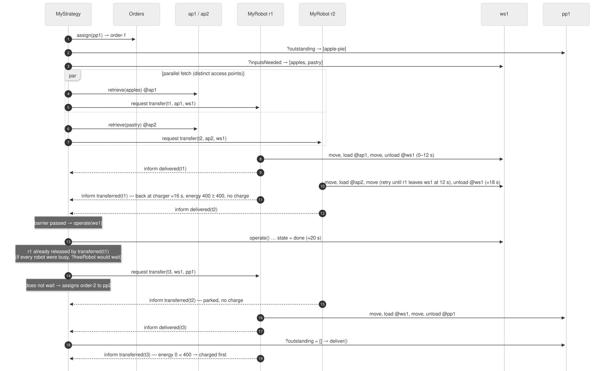

The system uses a central coordinator organisation built on top of the supplied CArtAgO environment. One coordinator agent, MyStrategy, decides what is done and by whom. One controller agent per robot, MyRobot, decides how a transfer is physically carried out, including waiting for occupied locations and charging. The environment artifacts decide what is legal: they enforce capacity, energy limits and recipes. No artifact is modified.
| Agent | Instances | Responsibilities | Information maintained |
|---|---|---|---|
MyStrategy (coordinator) | 1 | Discover resources; assign orders to packaging points; allocate transfers to robots; trigger workstation operation and order delivery | Resource lists, product → workstation map makes(ws, product), busy(robot), busyPP(pp), usedAp(ap), pending tasks task(id, robot, from, to) |
MyRobot (controller) | 1 per robot | Execute one transfer at a time; wait and retry occupied locations; decide when to charge | Own location, held item and energy; travelDistance option; largest measured transfer energy cost |
Main, core.Factory (supplied) | 1 each | Select the scenario, build the environment from JSON, create the robot agents and the coordinator | — |
request, inform, failure. Every transfer carries a task id t1, t2, ….
Main asks the supplied core.Factory agent to build the environment from the scenario JSON; the factory creates one MyRobot per robot (from the agent field) and Main then starts the coordinator. All coordination flows through one protocol: request transfer(id, from, to), answered by inform delivered(id) after unloading, inform transferred(id) once the robot is parked and available, or failure transfer(id, from, to).
travelDistance option itself and acts only on its own Robot artifact. Storage points exist but are not used by this single-stage design.
Floorplan.move reserves the target on departure, the second robot retries until the first leaves ws1 at about 12 s. The first robot is back at its charger and released (transferred) at about 16 s, before ws1 finishes at about 20 s, so the output can be dispatched without waiting. Which robot reaches ws1 first is not deterministic. Robots with 800 energy skip charging after the first trip (400 left = reserve) and charge after the second (0 left).
MyRobot controller. ① request transfer(id, from, to); ② inform delivered(id) sent right after unloading; ③ inform transferred(id) sent once parked (and charged if needed), which releases the robot; ④ failure transfer(id, from, to). arrived*: every move uses a bounded wait-and-retry, because checking that a location is free is not a reservation. Every working state, including the return to the charger and charging, is guarded: any failure is reported with failure transfer(id, from, to). The robot then stays where it failed and keeps any item it was holding; it can still accept a new request.
Contract Net would use each robot's local knowledge better, but it adds a negotiation round to every task and requires bids to be managed while robots are committed elsewhere. In the required scenarios easy-02 and easy-04 travel cost is uniform and fleets are small (at most six robots in any scenario), so central allocation is simpler and prevents double allocation directly. Because easy-03 and all medium and hard scenarios enable travelDistance, Contract Net is the main candidate extension.
agent field is changed in documented copies of the scenario files.